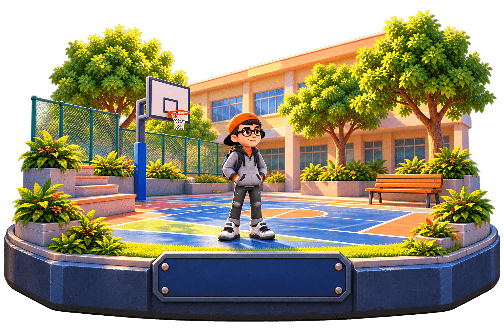

UMA BIBLIOTECA PARA CRIAR COM CUIDADO
Uma jornada,
uma linguagem.
Os elementos que dão vida ao Além do Silêncio, reunidos para criar experiências consistentes, acolhedoras e acessíveis.
Explorar o catálogo ↓
Cabeçalho de coleção
Identifica a coleção aberta na jornada.
Diário
A tela fornece ícone, rótulo e título.
<ads-collection-heading>…</ads-collection-heading>Implementação: src/components/collection-heading.ts.Anotação expansível
Uma reflexão que pode ser aberta para leitura.
Observe e converse com cuidado.
O conteúdo é fornecido pela tela e a abertura usa elementos nativos.
<ads-journal-entry>…</ads-journal-entry>Implementação: src/components/journal-entry.ts.Medalha da coleção
Relembra uma conquista e o cuidado demonstrado.
A tela fornece o ícone, o título e a descrição.
<ads-journal-badge>…</ads-journal-badge>Implementação: src/components/journal-badge.ts.Quando ainda não há conteúdo
Uma orientação para indicar o que aparecerá depois.
A tela fornece a mensagem e decide quando exibi-la.
<ads-empty-state>…</ads-empty-state>Implementação: src/components/empty-state.ts.Quadro de informação
Reúne um símbolo, um rótulo e um detalhe.
A tela fornece o conteúdo de cada quadro.
<ads-story-tile>…</ads-story-tile>Implementação: src/components/story-tile.ts.Cabeçalho de conversa
Identifica a etapa e seus indicadores visuais.
A tela fornece o texto e escolhe os indicadores.
<ads-story-header dots="1">…</ads-story-header>Implementação: src/components/story-header.ts.Conquista desbloqueada
Uma celebração breve para os aprendizados da jornada.
A tela fornece o nome e a descrição da conquista.
<ads-achievement-badge>…</ads-achievement-badge>Implementação: src/components/achievement-badge.ts.Resultado da escolha
Um destaque para apresentar o efeito da atitude escolhida.
O componente organiza o símbolo e os textos fornecidos pela tela.
<ads-feedback-hero>…</ads-feedback-hero>Implementação: src/components/feedback-hero.ts.Lembrete de apoio
Uma mensagem curta para complementar o aprendizado da conversa.
O componente compartilha a estrutura; o conteúdo é definido pela tela.
<ads-support-note>Mensagem</ads-support-note>Implementação: src/components/support-note.ts · Pode receber um título pelo atributo heading.Logo em movimento
O mesmo movimento suave aparece na abertura e na jornada; ele respeita a preferência por movimento reduzido.
A classe controla apenas a animação; tamanho e posicionamento pertencem à tela.
class="ui-logo-float"Estilos compartilhados: assets/style3d/components.css.O começo de tudo
Cores, formas e detalhes extraídos da interface atual. Os tokens nomeiam valores existentes; não representam uma escala global completa.
Botões
Conduzem a próxima ação e oferecem alternativas claras.
Os contadores atualizam o nome acessível conforme a quantidade. Use o teclado para ver o foco.
<ads-count-button button-id="medalsBtn" count="2" label="Ver" singular="medalha" plural="medalhas">🏅</ads-count-button>Estilos: index.html, style.css e journey-ui.css · Estados: ativo, foco e desabilitado conforme contexto.Painéis e progresso
Contexto para a missão e uma visão rápida do caminho percorrido.
MISSÃO
Encontre Lucas e inicie uma conversa acolhedora.
O painel, seu cabeçalho e o perfil usam Web Components; o controlador calcula o progresso.
<ads-journey-panel variant="mission">…</ads-journey-panel>Estilos: journey-ui.css · Dados reais: renderJourneyPath e updateCollectionCounts em src/game.ts.Etapas da jornada
Cores e símbolos mostram o estado; os nomes acessíveis identificam as fases.
- ✓QuadraConcluída
- 2CorredorFase atual
- 3AcolhimentoPróxima fase
Concluída, atual e futura. No jogo, fases concluídas podem ser repetidas e a lista tem navegação por setas.
<li class="journey-stop is-current">…</li>Renderização: packages/game-sdk/src/journey.ts e src/game.ts · Exemplo estático; não altera o progresso.Diálogo e escolhas
O nome e a fala têm lugares próprios. A escolha segue o ritmo da conversa.
Obrigado por perguntar.
Posso ficar aqui com você?
Selecione uma atitude para experimentar.
Posso ajudar?
Obrigado por perguntar.
Identificação separada do texto. O exemplo mostra seleção; no jogo, a escolha aciona a narrativa e a narração.
Dialogue.render(Dialogue.line('lucas', 'Obrigado.'))Fonte: packages/game-sdk/src/dialogue.ts, src/maps e src/game.ts · Exemplo de escolha independente do estado do jogo.Cartas de descoberta
Uma lição para guardar e revisitar ao longo da jornada.
Vire a carta para ler a lição; use as setas para navegar. O exemplo reproduz a interação sem modificar o jogo.
<button class="discovery-card-button" aria-expanded="false">…</button>Estilos: journey-ui.css · Implementação do jogo: discoveryCard e initDiscoveryCarousel em src/game.ts.Medalhas e avisos
Recompensas celebram o percurso; avisos mantêm o jogador informado.
Medalhas usam estados conquistada e bloqueada; avisos do jogo são temporários. O exemplo usa a mesma superfície de modal do jogo, com foco e teclado.
<div class="medal-slot earned">…</div>Fontes: index.html e showMedalBoard / showToast / showModal em src/game.ts. A superfície mantém o foco dentro da janela.Projetar com cuidado é
pensar em cada pessoa.
Use botões nativos, nomes acessíveis e foco visível. Confira leitura, contraste, conteúdo longo, teclado e telas pequenas. Respeite a preferência por movimento reduzido e teste os fluxos reais antes de publicar.
Voltar à jornada ↗